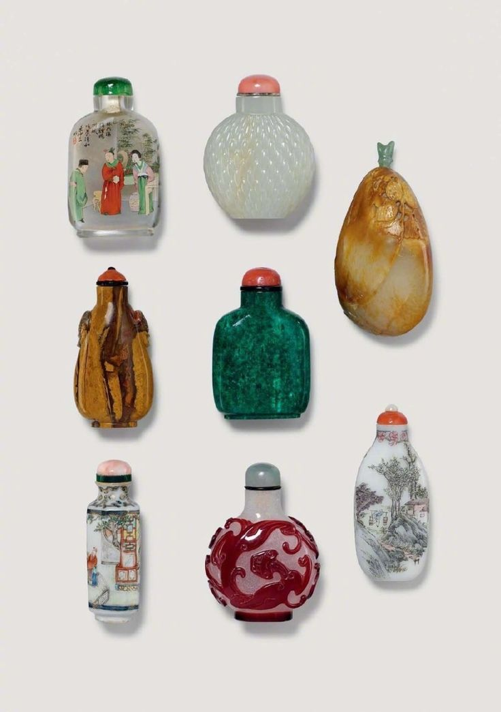
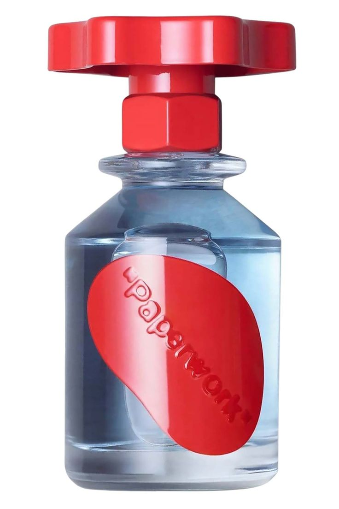
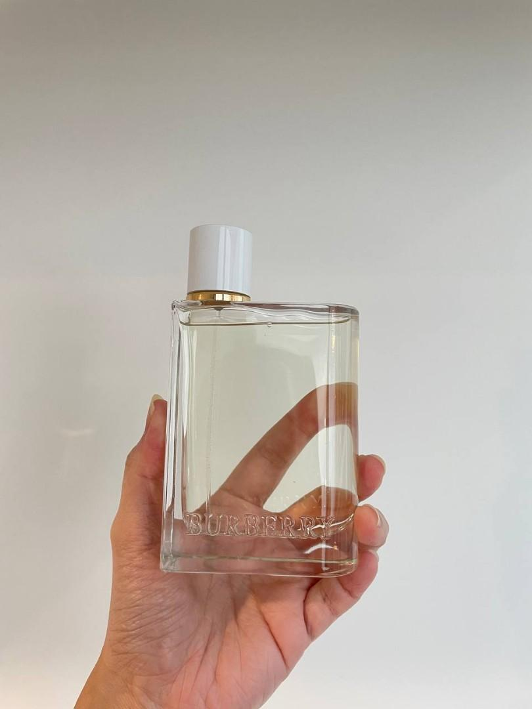

Perfume
Hello everyone, for the past year and a half, I've found myself becoming extremely interested in Perfume and just fragrances in general, so I would love to introduce you to the world of Fragrances.
Fragrantica: A website that compiles all the known fragrances that exist, and their notes. Also includes blog posts, reviews, and just general information about fragrances.
Luckyscent: Another website that is the go to retailer for Niche fragrances, also offers a wide array of samples for purchase for fragrance lovers who want to test out a scent.
Fragrance Dictionary
Notes
- Top Notes: the initial scents that you smell when you first spray or apply perfume. They are the lightest and most volatile notes, and they typically last for about 10-15 minutes.
- Middle Notes: Mid notes are often called 'heart' notes, because they form the heart of a fragrance. They are considered 'mellow' and 'balancing'. They are by nature nor fresh, nor deep. The true smell of mid notes usually starts revealing itself from 15 minutes onward and will can last for up to a few hours.
- Base Notes: Base notes in a perfume form the foundation on which the entire perfume is built, providing the last impression of the scent.
Fragrance Concentrations
- Eau de Toilette (EDT): A fragrance with a 5-10% concentration of perfume oil to alcohol.
- Eau de Parfum (EDP): A fragrance with a 10-15% concentration of perfume oil to alcohol.
- Eau de Cologne (EDC): The least concentrated style of fragrance, with a perfume oil to alcohol ratio of only 2-5%. Originally referred to a specific style of lightly concentrated citrus-heavy fragrance created in Cologne, Germany, but is now used much more generally. Due to its lightness, an eau de cologne is typically bottled in large sizes and meant to be splashed on throughout the day.
- Extrait/extract: fragrance with a 15-45% concentration of perfume oil. Extraits are generally the most concentrated form of perfume available to purchase.
Types of Fragrances
- Skin Scent: A scent with minimal projection (i.e., one that can only be detected when extremely close to the wearer). Because of the kinds of ingredients that tend to have this effect, many skin scents have similar characteristics: soft, sheer, and musky.
- Animalic: A term used to describe musky, dirty, skanky notes traditionally derived from animal sources, like musk, civet, and ambergris.
- Gourmand: A gourmand fragrance is one that primarily evokes food, usually dessert. This can include notes of vanilla, chocolate, fruit, caramel, and more. Some of our most notable gourmand scents include Viktoria Minya Hedonist and Indult Tihota.
- Attar: An attar is a traditionally middle eastern perfume where the ingredients are fixed in rose essential oil instead of an odorless oil or alcohol, resulting in intense, complex fragrances. Examples of middle eastern style attars include the Al Attar and Xerjoff XJ Oud Attars lines. More broadly, an attar may refer to any essential flower oil.


